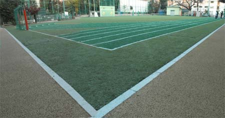
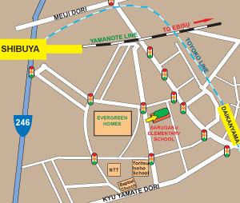

|
Sarugaku Elementary School, Daikanyama, Shibuya-ku.
渋谷区立猿楽小学校は、代官山にあります。代官山、渋谷、恵比寿などの地域の子供たちを対象にしています。

校庭は、安全な人工芝のグラウンドですので、フラットソールのスニーカーまたはフットサル用のサッカーブーツ（スパイクでないもの）が適しています。必ずスネあて（シンパッド）をご使用ください。悪天候の際は、同施設内の体育館で行います。その際には、室内用のトレーニングシューズとスネあての着用をお願いします。セッションに参加する際には、なるべくＢＦＡの公式シャツ及びショーツを着用して下さい。
駐車場はありませんので、お子様を車で送り迎えされる場合は、近隣の駐車場に駐車頂きます様お願いいたします。
行き方
電車：
東急東横線、代官山駅から徒歩7分。渋谷駅(南口)から徒歩10分。
地図を印刷するには、ここをクリック
|
|